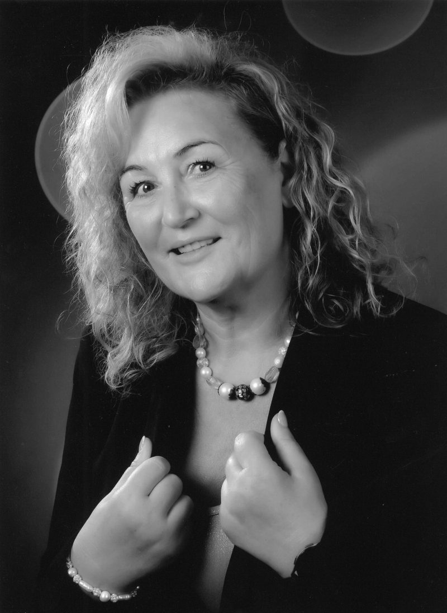

Csengeri Zsuzsa
Ahol a belső út formát ölt
Kineziológus·Oktató·Író
Évtizedek kineziológusi és oktatói tapasztalata, az Informális kineziológia és a Bio-Narratíva megalkotása, valamint öt megírt regény.
Ismerje meg a belső utat és a hátteremet